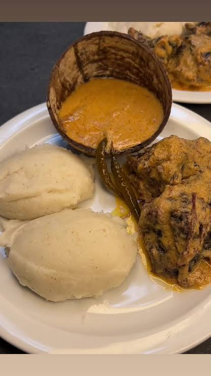

Gastronomia Moçambicana
Restaurante
Bem-vindo ao Restaurante Gastronomia Moçambicana
Sabores tradicionais com um toque moderno.

Início
Menu
Sobre Nós
Reservas
Bem-vindo!
Descubra sabores tradicionais e autênticos de Moçambique